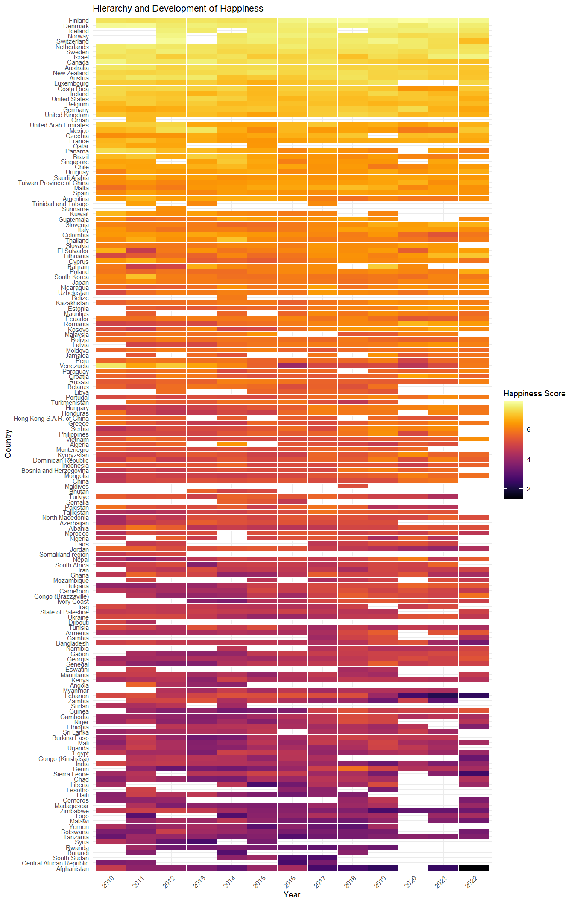

#Preliminaries:
knitr::opts_chunk$set( message=FALSE, warning=FALSE) #echo = FALSE,
rm(list=ls())
library(readxl)
library(tidyverse)
library(viridis)In our rapidly evolving digital age, Mark Twain’s famous quip, “I only believe in statistics that I doctored myself”, takes on new significance. As the amount and accessibility of data continue to expand, the challenge of transforming raw data into actionable insights becomes increasingly vital. This transformational journey is equally relevant to business leaders, policymakers, and individuals navigating in an information-saturated world. The good news is that we can now make more evidence-based decisions, thanks to the decreasing barriers of data availability (e.g. this blog post or ICPSR), advancements in software and hardware, and the democratization of data analysis tools supported by the open source movement. However, the challenge remains: How do we separate valuable insights from the noise? The answer lies, in part, in fostering data literacy and transparency.
Let’s take the first step together by demonstrating how you can turn data into valuable insights using just a few lines of R code, to uncover intriguing patterns in global happiness. We’ll use data from the World Happiness Report 2023, which compiles self-reported happiness data from various countries. We first download and read the data
if (file.exists("DataForTable2.1WHR2023.xls")) {
data_in <- readxl::read_excel("DataForTable2.1WHR2023.xls")
} else {
download.file("https://happiness-report.s3.amazonaws.com/2023/DataForTable2.1WHR2023.xls", "DataForTable2.1WHR2023.xls", mode = 'wb') #adjust 'mode' if not running on windows machine
data_in <- read_excel("DataForTable2.1WHR2023.xls")
}
#show data:
head(data_in)and with the aid of the popular R-tidyverse framework, we’ll manipulate the data to explore regional and developmental trends in average perceived happiness across the globe. Our analysis focuses on data from 2010 onward and we order the 163 countries by their “happiness index”, averaged over time:
data_in %>%
filter(year >= 2010) %>%
group_by(`Country name`) %>%
mutate(happiness_mean=mean(`Life Ladder`), n=n()) %>% #mean happiness by country
ungroup() %>%
mutate(rank=rank(happiness_mean)) %>% #create happiness rank across countries
mutate(year=as.factor(year), `Country name`=fct_reorder(factor(`Country name`), rank)) %>% #order countries by average happiness
ggplot(aes(y=`Country name`, x=year, fill=`Life Ladder`)) + # graph
scale_fill_viridis(option="inferno") + #colour
geom_tile(colour="white") + #background colors
theme_minimal(base_size = 7) +
theme(axis.text.x = element_text(angle = 45, hjust=1)) +
labs(title="Hierarchy and Development of Happiness", fill="Happiness Score",
y="Country", x="Year") 
The resulting graphic, inspired by Healy (2018), is a dynamic map showing the world’s happiness over time. Nordic countries consistently rank high, while many African and Oriental countries trend toward the bottom. We also see that from 2020 there are more white spaces across the world. Is this phenomenon linked to the COVID-19 pandemic? Examining differences, changes, extreme values, and missing values can be a rich source of insights when exploring a data set.
The data journey doesn’t stop at mere observation: Knowledge of statistical communication, programming, and modeling provides you with a range of skills from data wrangling and visualization to predicting likely outcomes for new instances (eg. Kuhn and Johnson (2013)), assessing causal relationships (eg. Pearl and Mackenzie (2018)), and creating new data products.
In the spirit of this discussion, this website gives some examples of reproducible data analytics using various real-world data, which may be interesting to you, whether you are new to data science or a seasoned professional. Feel free to get in touch.